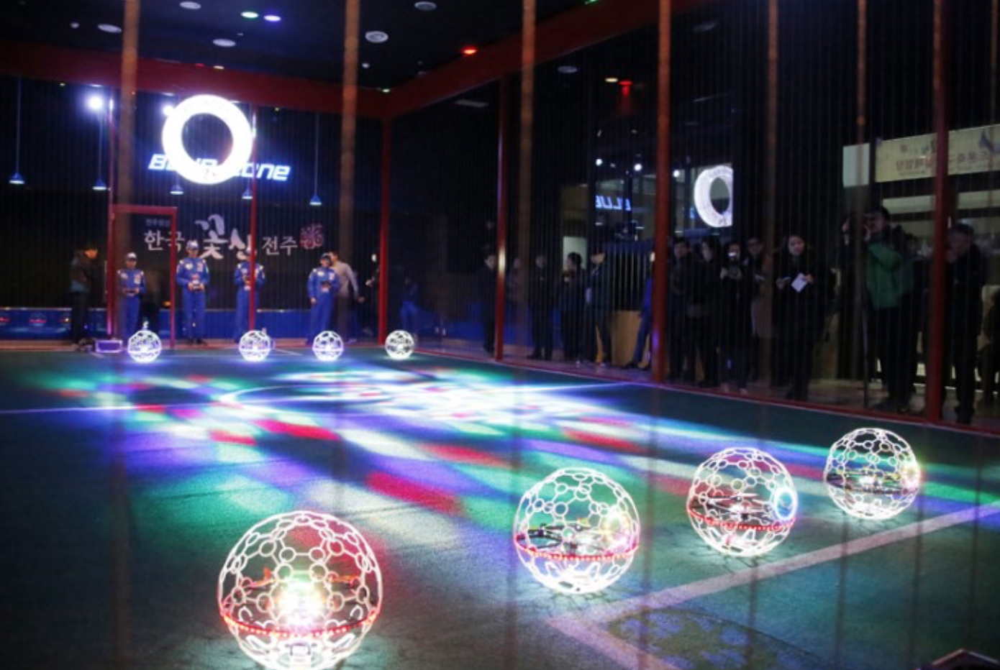
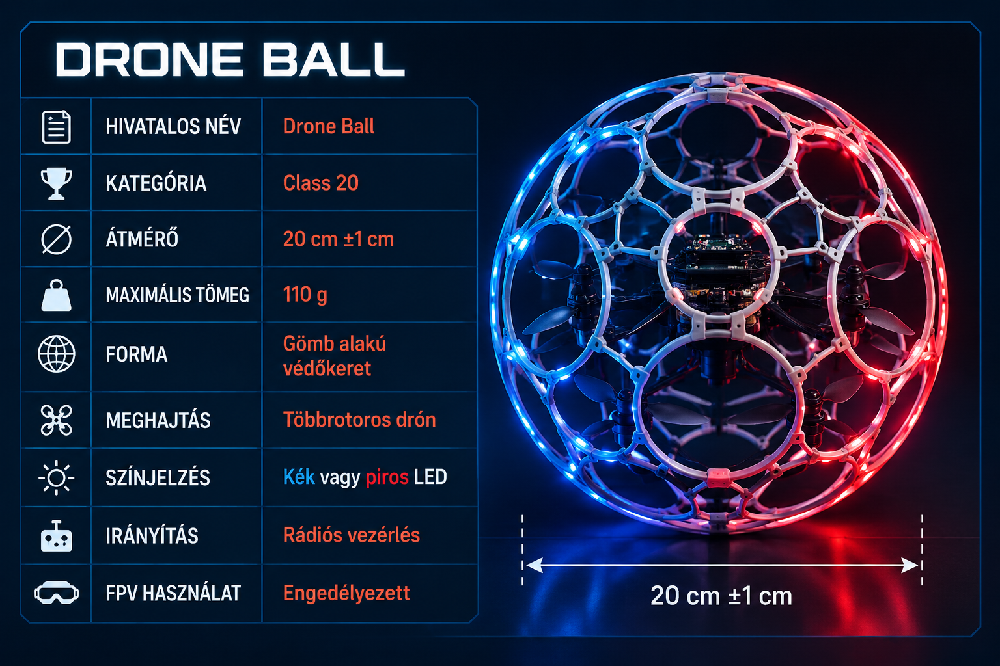
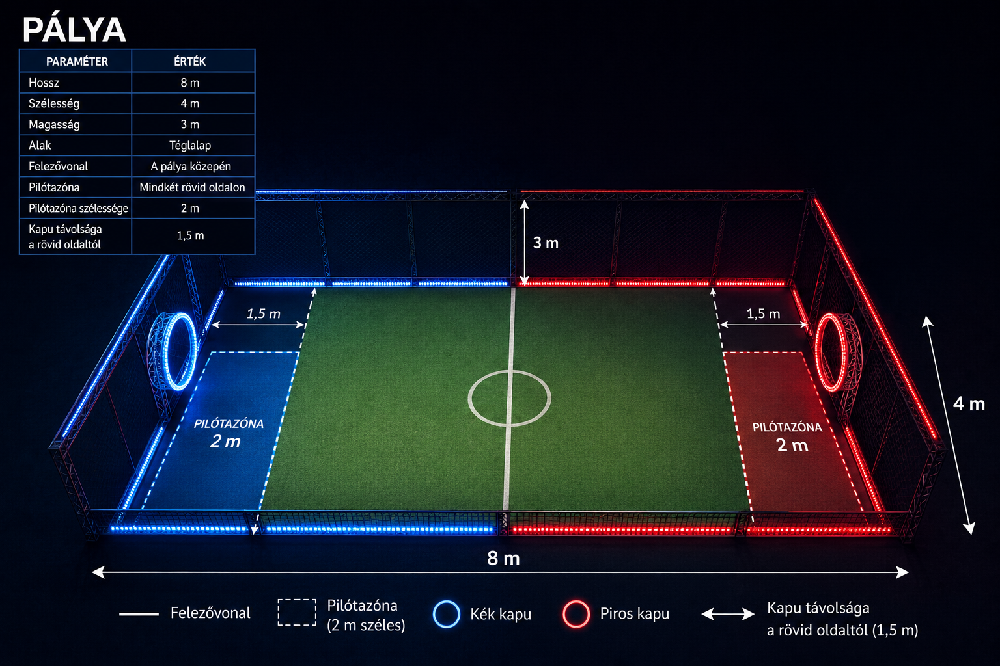
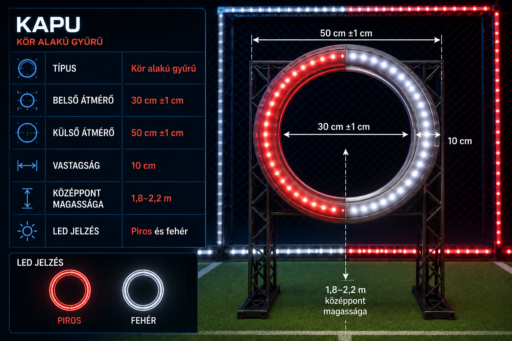
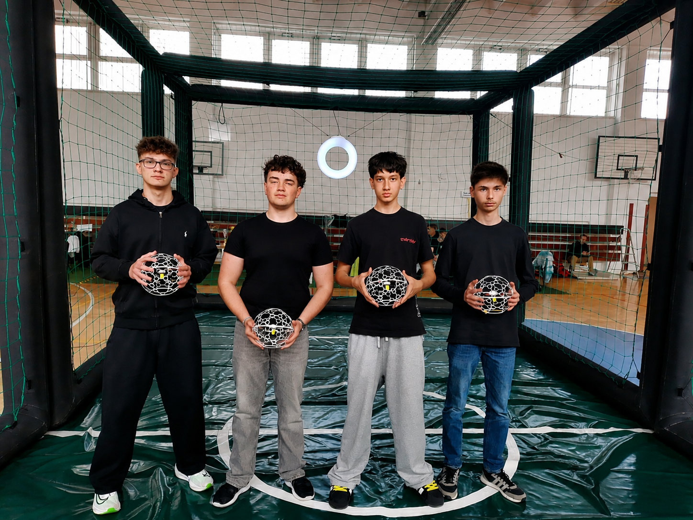

AI Website SoftwareA drónfoci egy innovatív és látványos technosport, amely 2016-ban indult Dél-Koreában, és azóta gyorsan terjed a világ számos országában. A sportág különlegessége, hogy ötvözi a repüléstechnikát, a robotikát, az elektronikát és a hagyományos csapatsportok izgalmát. A játék során a pilóták speciális, védőburkolattal ellátott drónokat irányítanak egy hálóval körülvett arénában, ahol a cél az ellenfél kapujának elérése.
A drónfoci egyik legnagyobb előnye, hogy szinte bárki kipróbálhatja. Nem szükséges előzetes drónpilóta-tapasztalat vagy műszaki háttértudás, mivel az alapok viszonylag rövid idő alatt elsajátíthatók. A sport fejleszti a koncentrációt, a reakcióidőt, a térérzékelést, valamint a kéz-szem koordinációt. Emellett erősíti a problémamegoldó képességet és az együttműködési készséget is.

A mérkőzést az a csapat nyeri, amelyik a legtöbb szettet megnyeri. Ha valamelyik csapat már a második szett után megszerezte a győzelmet, a harmadik szettet akkor is lejátsszák a rangsorolás érdekében.
A drónfocimérkőzést 3 perces szettekben játsszák, és a győzelemhez a verseny szabályaitól függően 2 vagy 3 nyert szettre van szükség.
Az egyes szettek között 3–5 perc áll rendelkezésre, amely alatt a csapatok javításokat végezhetnek a drónokon és egyeztethetik a stratégiájukat.
Egy teljes drónfoci-mérkőzés általában körülbelül 30 percig tart.
Ha egy szett döntetlennel zárul, „hirtelen halálos hosszabbítás” következik, amelyben az a csapat nyer, amelyik elsőként szerez pontot.



A mérkőzés elején mindkét csapat öt drónja a saját kapuja alatt kijelölt felszállóhelyről indul. A bíró jelzésére a drónok felszállnak, és a csapatok megpróbálják kialakítani a támadó és védekező pozíciókat.
A három védő feladata, hogy utat nyisson a két Striker számára, miközben ütközésekkel és blokkolással akadályozzák az ellenfelet. A támadás célja, hogy valamelyik Striker eljusson az ellenfél kapujáig és megfelelő helyzetből támadhasson.
Gólt kizárólag a Striker szerezhet, ha drónja teljes egészében áthalad az ellenfél gyűrű alakú kapuján elölről hátrafelé. A gólszerzést követően a csapat automatikusan leshelyzetbe kerül, ezért nem támadhat tovább azonnal.
A leshelyzet csak akkor szűnik meg, ha a gólt szerző csapat összes drónja visszatér a saját térfelére, a felezővonal mögé. Ezután új támadás építhető fel, így a játék folyamatos támadás–visszarendeződés ciklusokból áll.
A védők feladata az ellenfél Strikereinek megállítása, a kapu körüli terület védelme és a támadások megtörése. A drónok közötti ütközés megengedett, de a szabálytalan mozgások és a leshelyzetből szerzett gólok büntetést vonhatnak maguk után.
A mérkőzés három darab háromperces szettből áll, a szettek között javítási és felkészülési szünettel. Az a csapat nyeri a mérkőzést, amelyik először két szettet megnyer; döntetlen esetén hosszabbítás vagy büntetőpárbaj dönt a győztesről.

A Füleki Gimnázium csapata kiváló eredményt ért el a drónfoci-bajnokságon, ahol a 2. helyen végzett. A sikernek köszönhetően a csapat kvalifikálta magát az olaszországi Bolognában megrendezésre kerülő Európa-bajnokságra, ahol nemzetközi mezőnyben képviselheti iskoláját és régióját.
AI Website Software